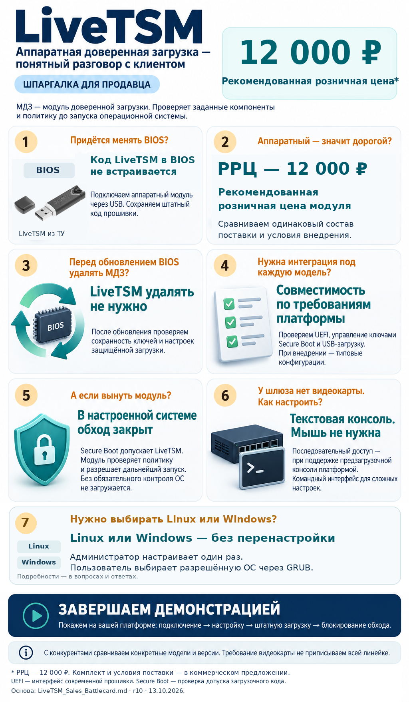
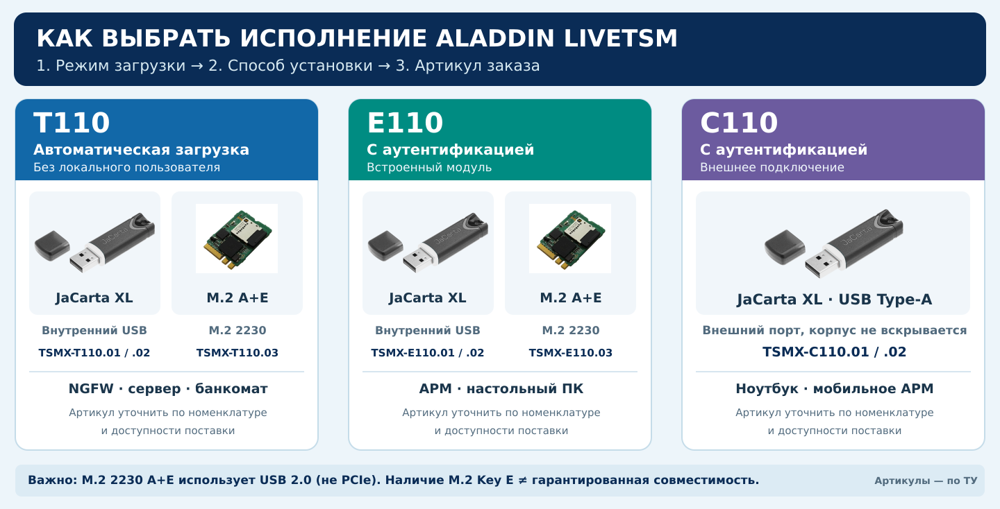
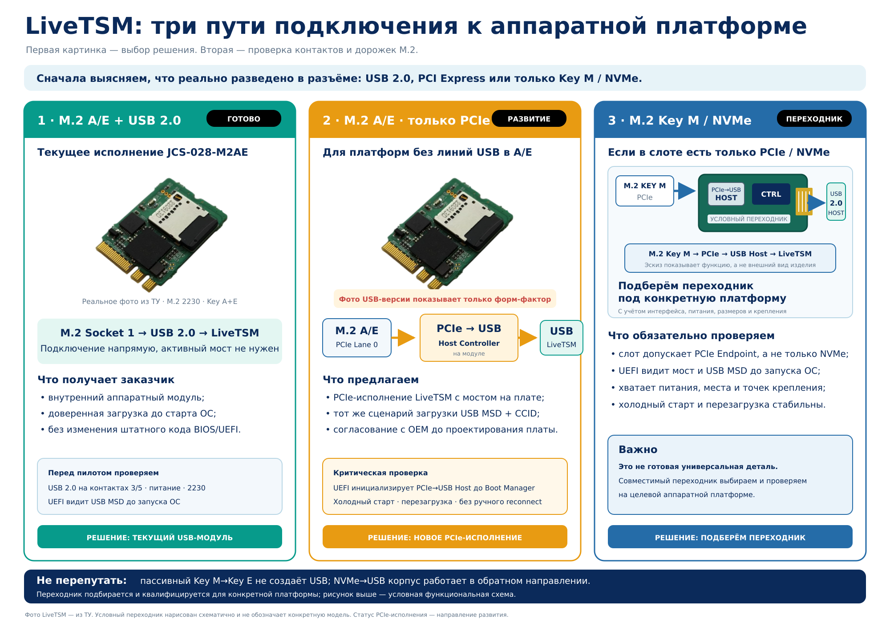
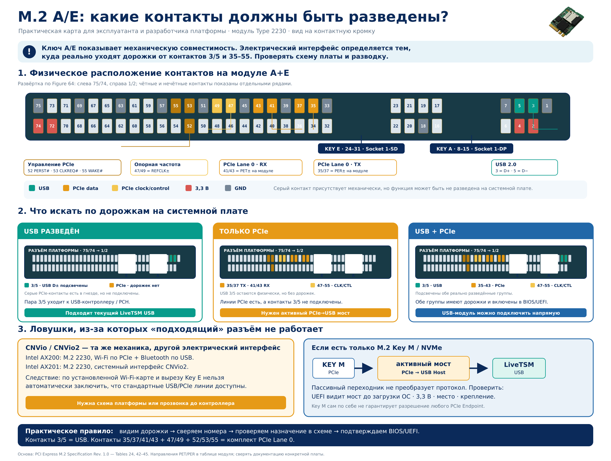
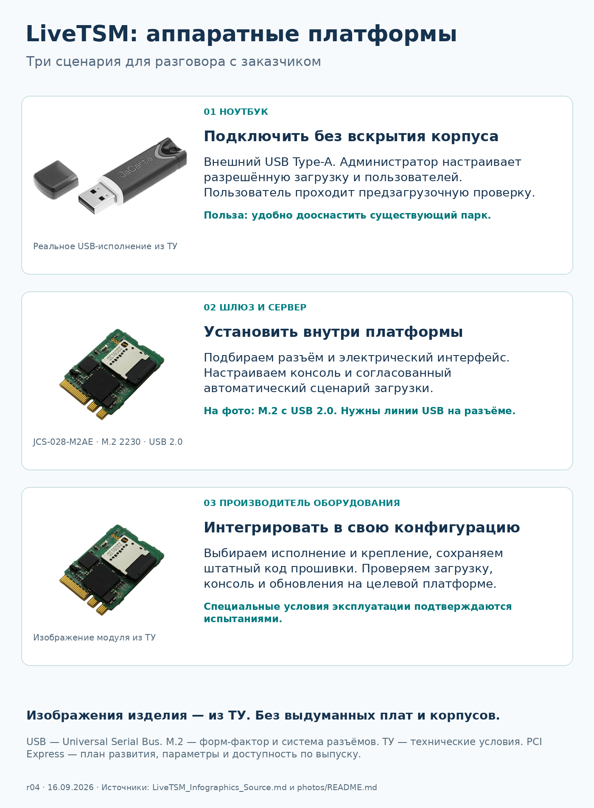
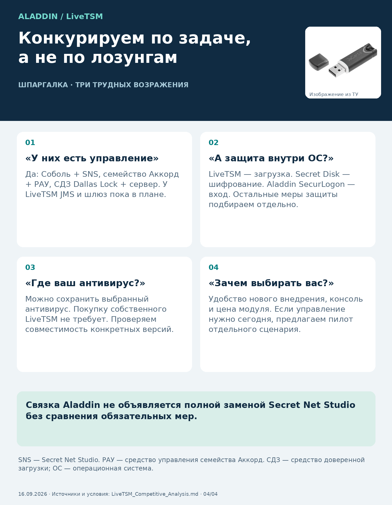
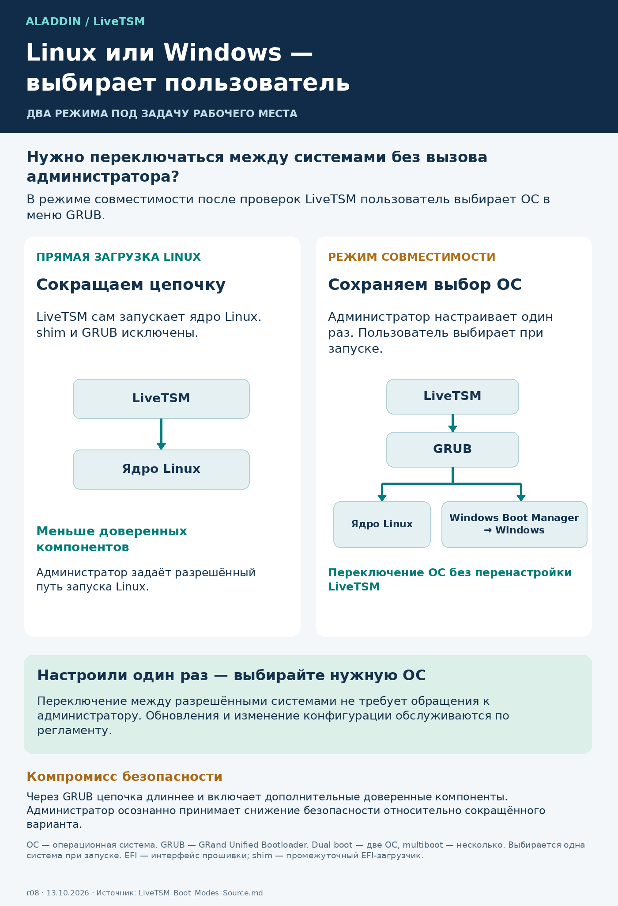

T110 · автоматически
NGFW, сервер, банкомат. Внутренний XL или M.2 A+E.
TSMX-T110.01 / .02 / .03
От задачи заказчика — к выбору исполнения, проверке электрического интерфейса и согласованию платформы с производителем оборудования.
Знакомство с продуктом · 4:59
Вводная видеопрезентация: что делает LiveTSM, для каких задач подходит и что важно при внедрении и обслуживании.
Озвучка на русском языке. Полные субтитры включены в изображение — видео можно смотреть без звука.
Здравствуйте. Сегодня поговорим о LiveTSM — аппаратном модуле доверенной загрузки. Этот рассказ адресован тем, кто выбирает средства защиты, внедряет их и затем отвечает за работу оборудования. За несколько минут мы посмотрим, как устроен LiveTSM, что происходит при включении компьютера и чем отличаются сценарии для рабочего места, ноутбука и автономного устройства. Разберём и практические вопросы: нужно ли менять BIOS, можно ли запустить систему в обход проверок и что необходимо учесть перед установкой. Начнём с самого устройства.
Перед вами реальные модули LiveTSM. В зависимости от исполнения это устройство с подключением USB Type-A или плата M.2. Внешний вариант удобен для ноутбука: его можно подключить без вскрытия корпуса. Для установки внутри оборудования подбирают подходящее исполнение и подключение. Код модуля не встраивается в образ BIOS. Штатный код прошивки сохраняется. При этом администратор настраивает параметры загрузки, доверенные ключи и защиту этих настроек. То есть установка всё равно требует подготовки платформы.
Теперь проследим обычное включение компьютера. Настроенная политика Secure Boot допускает запуск LiveTSM и закрывает альтернативные пути в обход него. Просто поставить модуль первым в списке загрузки недостаточно. Сам модуль выполняет предусмотренные политикой проверки, в том числе контроль целостности заданных компонентов. Только после успешного результата управление передаётся разрешённой операционной системе. Если требования политики нарушены, защищённая штатная загрузка блокируется. Администратор выясняет причину и действует по принятому регламенту. Это важно заранее показать эксплуатационной команде: какой результат считается нормальным, а какой требует вмешательства. При внедрении отдельно проверяют попытку загрузки с другого носителя и запуск без обязательного модуля. В правильно настроенной конфигурации такие действия не должны открывать обход контроля.
Один и тот же принцип применяется в разных условиях. На стационарном рабочем месте выбирают исполнение и режим с идентификацией и аутентификацией пользователя до запуска системы. Для мобильного рабочего места важен внешний форм-фактор и подключение без разборки ноутбука. А у автономного оборудования другая задача: после перезапуска рядом может не оказаться человека. Например, сетевой шлюз или сервер должен пройти предусмотренные проверки и продолжить работу. На поддерживаемой платформе для этого заранее настраивается автоматическая доверенная загрузка. Личный токен пользователя при штатном старте не нужен. Сам модуль остаётся подключённым. Для входа в настройки администратор проходит аутентификацию. Поэтому сначала определяют сценарий эксплуатации, а затем выбирают конкретное исполнение.
Теперь о повседневной работе. Для настройки предусмотрены графический и полноценный консольный интерфейсы. На оборудовании без видеокарты можно использовать предзагрузочную консоль, если платформа поддерживает её перенаправление. Возможности управления и способ подключения модуля проверяют для выбранной конфигурации. Обновление BIOS не требует удаления кода LiveTSM из прошивки: он туда не встроен. Но после обновления необходимо проверить сохранность доверенных ключей, параметров загрузки и защиты настроек. Если они изменились, утверждённую конфигурацию восстанавливают и проверяют до возвращения оборудования в эксплуатацию. То же внимание требуется при согласованных изменениях операционной системы и её загрузочных компонентов.
Что нужно для начала? Определить защищаемую систему и режим запуска. Нужна поддерживаемая платформа с 64-разрядной UEFI, настройкой собственных доверенных ключей и загрузкой модуля через USB. Для платы M.2 одного совпадения разъёма недостаточно: это исполнение использует USB 2.0. Проверяют питание, подключение и доступность устройства в UEFI. Затем согласовать политику проверок и порядок обслуживания. LiveTSM решает конкретную задачу: организует разрешённый путь загрузки и выполняет контроль перед запуском системы. Он не подменяет остальные средства защиты работающей инфраструктуры. Подробные ответы и материалы для выбора конфигурации собраны в Sales Kit. Контакты Аладдина и ссылка на комплект — на экране.
Первые два листа показывают действующие возможности и план развития. Третий — помогает выбрать семейство, аппаратную платформу и артикул.


Сначала определяем режим загрузки и способ установки, затем выбираем артикул. T110 и E110 выпускаются в конструктиве JaCarta XL либо M.2; C110 — только внешний USB-A.

NGFW, сервер, банкомат. Внутренний XL или M.2 A+E.
TSMX-T110.01 / .02 / .03
Настольный АРМ. Внутренний XL или M.2 A+E.
TSMX-E110.01 / .02 / .03
Ноутбук без вскрытия корпуса. USB Type-A, JaCarta XL.
TSMX-C110.01 / .02
Перед заказом: обозначения и аппаратные платформы указаны по ТУ; действующую номенклатуру, комплектацию и наличие проверяем в Salesforce. M.2 A+E использует USB 2.0, а не PCIe; требуется проверка электрической совместимости.
Aladdin LiveTSM — средство доверенной загрузки уровня платы расширения: 4-й класс защиты, 4-й уровень доверия (УД4). Профиль защиты — ИТ.СДЗ.ПР4.ПЗ.
1-й класс защищённости
Автоматизированные системы управления технологическими процессами
Приказ ФСТЭК № 31, п. 241-я категория значимости
Критическая информационная инфраструктура
Приказ ФСТЭК № 239, п. 29LiveTSM обеспечивает доверенную загрузку в составе системы защиты информации. Соответствие системы в целом оценивается отдельно с учётом реализованных мер защиты.
Сначала выясняем, что реально разведено в разъёме: USB 2.0, PCI Express или только M.2 Key M / NVMe. После этого выбираем текущее исполнение, направление развития или переходник под конкретную платформу.

Текущее M.2 2230 A+E исполнение. Нужны USB_D+ и USB_D- на контактах 3 и 5.
Требуется PCIe-исполнение с мостом PCIe-to-USB Host на модуле. Статус — направление развития.
Подберём активный переходник и проверим питание, механику и раннюю инициализацию UEFI.
Карта предназначена для схемотехника, разработчика UEFI и внедренца. Она показывает физическое положение USB, PCIe Lane 0, питания и ключей A/E — именно так можно проверить разъём по схеме и трассировке платы.

После выбора интерфейса возвращаемся к задаче заказчика: ноутбук без вскрытия корпуса, шлюз или сервер с внутренним модулем, интеграция в серийную платформу OEM.
Для межсетевых экранов нового поколения (NGFW), сетевых шлюзов и серверов. При штатном включении или перезапуске устройство может загрузиться без присутствия оператора.
Почему возможен такой запуск. Профиль ИТ.СДЗ.ПР4.ПЗ, который детализирует требования приказа ФСТЭК России № 119 для средств доверенной загрузки уровня платы расширения 4-го класса защиты, не требует идентифицировать и аутентифицировать пользователя при каждом штатном запуске.
Доступ к настройкам защищён аутентификацией администратора. Применимость режима проверяют по документации конкретного исполнения и требованиям системы заказчика. Профиль защиты ИТ.СДЗ.ПР4.ПЗ.
Подробное обоснование автоматической загрузки NGFW без личного токена


Демонстрации без звука показывают сценарии для ноутбука и многофункционального сетевого шлюза.
T110 — автоматическая загрузка для NGFW, серверов и специализированного оборудования; E110 — внутреннее исполнение с предзагрузочной идентификацией и аутентификацией; C110 — внешнее USB-A для ноутбуков.
T110 и E110 бывают в конструктиве JaCarta XL или M.2 2230 A+E; C110 — только JaCarta XL. Всего в ТУ перечислены восемь артикулов. Открыть полный справочник.
M.2 использует USB 2.0, а не PCIe. Действующие артикулы и комплектацию уточняйте в Salesforce.
Да. Администратор один раз задаёт разрешённую конфигурацию: LiveTSM выполняет проверки и передаёт управление GRUB. Пользователь выбирает нужную ОС в меню. Для каждого переключения перенастройка LiveTSM не нужна.
Обновления и изменение разрешённой конфигурации обслуживаются по регламенту. Выбирается одна ОС при запуске; это не одновременная работа нескольких систем.
Прямая загрузка Linux: LiveTSM сам запускает ядро Linux, исключая shim и GRUB из цепочки.
Режим совместимости: LiveTSM запускает разрешённый GRUB, а пользователь выбирает ОС. Для Windows сохраняется Windows Boot Manager.
GRUB — GRand Unified Bootloader, загрузчик с меню выбора ОС. shim — промежуточный EFI-загрузчик; EFI — Extensible Firmware Interface, интерфейс прошивки. ОС — операционная система.

Прямая загрузка Linux сокращает число доверенных компонентов. Режим совместимости сохраняет привычный выбор ОС, но делает цепочку длиннее и расширяет поверхность атаки. Администратор осознанно принимает снижение безопасности относительно сокращённого варианта ради гибкости рабочего места.
В обоих случаях единственный разрешённый старт через LiveTSM должен сохраняться. Состав контролируемых компонентов определяется выбранной политикой и версией продукта.
Источники: уточнения руководителя продукта от 13.10.2026; описание сценария и технические ссылки.
Можно скачать весь безопасный публичный комплект одним ZIP или переслать заказчику и партнёру отдельные материалы.